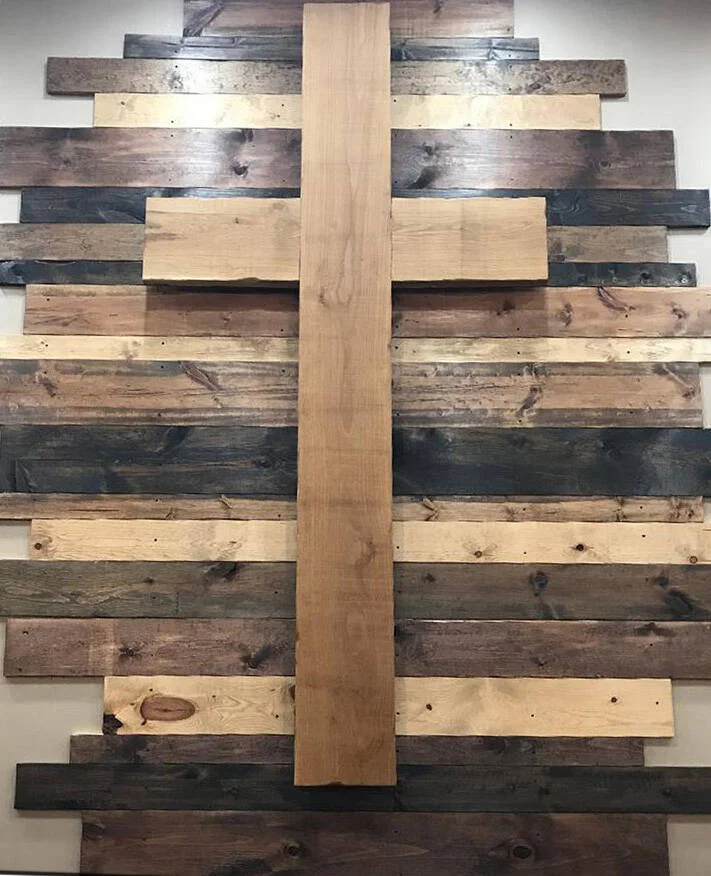

"Do not be anxious about anything, but in every situation, by prayer and petition, with thanksgiving, present your requests to God." — Philippians 4:6

At Chesterfield Community Church of God, we believe deeply in the power of unified prayer. Our pastoral staff and prayer chain intercede regularly for our community.

Available for hospital visitation, phone prayer, and one-on-one spiritual support.
You can choose whether your request is shared with our dedicated church prayer chain or kept strictly confidential among pastoral staff only.
Direct Pastoral Care: (765) 378-7685
Office Hours: Mon – Wed 9:00 AM – 1:00 PM

Our church body is actively united in prayer as our search committee seeks God's chosen leader for the next season of fruitful ministry at Chesterfield Community Church of God.